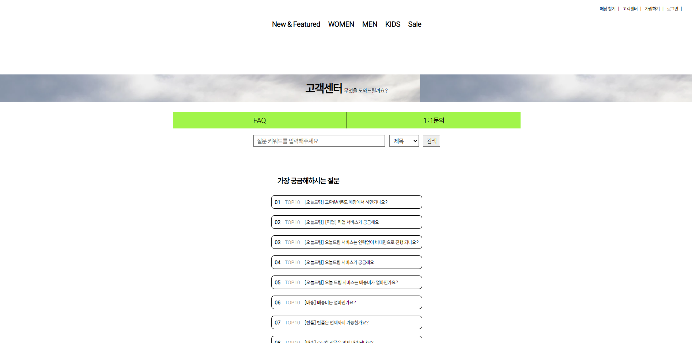

ABOUT
뛰어난 기술력과 더불어 변화에 대한 민첩성이 필요한 분야에서 제가 쌓아온 개발 기반과 학습 능력을
통해회사의 성장에 이바지하고, 배운 내용을 빠르게 습득하여 함께 발전하는
기업 문화에 참여하고 싶습니다. 또, 부족한 부분을 파악하고 지속적인 학습을 통해 빠르게 발전하며
업무 효율을 높이기 위해 온 힘을 기울이겠습니다.
협업과 소통을 통해 팀의 일원으로써 업무에 이바지하고,
새로운 도전에 적극 참여하여 함께 성장하는 기업 문화에 이바지하고 싶습니다.
통해회사의 성장에 이바지하고, 배운 내용을 빠르게 습득하여 함께 발전하는
기업 문화에 참여하고 싶습니다. 또, 부족한 부분을 파악하고 지속적인 학습을 통해 빠르게 발전하며
업무 효율을 높이기 위해 온 힘을 기울이겠습니다.
협업과 소통을 통해 팀의 일원으로써 업무에 이바지하고,
새로운 도전에 적극 참여하여 함께 성장하는 기업 문화에 이바지하고 싶습니다.
Stacks 기술 스택
기본적인 HTML 페이지를 설계하고 Thymeleaf
문법을 이용해서
데이터를원하는 위치에 넣을 수 있습니다
문법을 이용해서
데이터를원하는 위치에 넣을 수 있습니다
기본적이고 자주 사용
되는 스타일을 CSS로
페이지에 적용할 수 있습니다. 완성도 높은
서비스를 위해 기본적인 반응형에 대해
공부하고 있습니다.
되는 스타일을 CSS로
페이지에 적용할 수 있습니다. 완성도 높은
서비스를 위해 기본적인 반응형에 대해
공부하고 있습니다.
JavaScript를 활용해서
다양한 이벤트를 페이지에 적용할 수 있고 Ajax를 활용해서 서버와 비동기 통신하여 데이터를 분할하여 읽어오는 방법을
활용할 수 있습니다.
다양한 이벤트를 페이지에 적용할 수 있고 Ajax를 활용해서 서버와 비동기 통신하여 데이터를 분할하여 읽어오는 방법을
활용할 수 있습니다.
객체 지향 프로그래밍에 대해 이해하고 프로그래밍 기초문법
(제어문, 배열, 연산자),
클래스, 상속 추상클래스 API, 예외처리를
구현할 수 있습니다.
(제어문, 배열, 연산자),
클래스, 상속 추상클래스 API, 예외처리를
구현할 수 있습니다.
데이터베이스 개념과
이해 SQL문을 활용한 테이블 생성과 검색, 수정, 삭제 처리가 가능 합니다.
이해 SQL문을 활용한 테이블 생성과 검색, 수정, 삭제 처리가 가능 합니다.
MySQL의 기본 쿼리문을 활용하여 데이터베이스와 대화할 수 있습니다.
대부분의 프로젝트에서 MySQL을
사용해봤습니다.
대부분의 프로젝트에서 MySQL을
사용해봤습니다.
Spring Boot를 이용한
웹 애플리케이션 개발
경험이 있습니다. REST API 설계 및 구현, Spring MVC를 활용한 프로젝트 진행 경험이 있습니다.
웹 애플리케이션 개발
경험이 있습니다. REST API 설계 및 구현, Spring MVC를 활용한 프로젝트 진행 경험이 있습니다.
Git hub를 이용한 형상 관리 및 협업 경험이 있습니다.
Overall Experiences
대구가톨릭대학교 모바일소프트웨어전공 졸업
2018.03 ~ 2024.02
컴퓨터공학에 대한 깊은 관심과 열정을 바탕으로, 대구가톨릭대학교에서 모바일소프트웨어를 전공하였습니다.
운영체제, 알고리즘, 자료구조 등 컴퓨터공학의 핵심 과목들을 통해 체계적인 지식을 쌓았습니다.
운영체제, 알고리즘, 자료구조 등 컴퓨터공학의 핵심 과목들을 통해 체계적인 지식을 쌓았습니다.
운영체제: 컴퓨터 시스템의 효율적인 자원 관리와 운영 원리를 이해하고, 다양한 운영체제의 구조와 기능을 학습하였습니다.
알고리즘: 문제 해결을 위한 효율적인 알고리즘 설계와 분석 방법을 익히며, 최적화된 코드 작성 방법을 배웠습니다.
자료구조: 데이터의 효율적인 저장과 관리를 위한 다양한 자료구조를 학습하여,
복잡한 문제를 체계적으로 해결하는 능력을 갖추었습니다.
복잡한 문제를 체계적으로 해결하는 능력을 갖추었습니다.
코딩 과정에서 발생하는 오류를 고민하고 해결하는 과정에서 큰 성취감과 흥미를 느끼며,
전공에 대한 열정이 더욱 높아졌습니다.
이를 통해, 문제 해결 능력과 창의적인 사고력을 키우기 위해서 노력중입니다.
전공에 대한 열정이 더욱 높아졌습니다.
이를 통해, 문제 해결 능력과 창의적인 사고력을 키우기 위해서 노력중입니다.
Java 백엔드 개발자 양성 프로그램 수료
2024.05.16 ~ 2024.07.26
웹 개발에 대한 열정과 개발 능력 향상을 위해 자바 백엔드 개발자 양성 프로그램에 참여하였습니다.
이 프로그램을 통해, 기존에 학교에서 배웠던 기초 지식을 기반으로 웹 개발의 전반적인 과정을 심화 학습했습니다.
Spring Boot 활용: 본격적으로 Spring Boot를 이용한 웹 애플리케이션 개발을 진행하며, 백엔드 시스템의 구조와 작동 원리를
깊이 이해하게 되었습니다. 이를 통해 사용자와 상호 작용할 수 있는 웹 애플리케이션을 구현할 수 있게 되었습니다.
이 프로그램을 통해 단순히 기술을 익히는 것을 넘어, 문제 해결 능력과 프로젝트 관리 능력을 키웠습니다.
이 프로그램을 통해, 기존에 학교에서 배웠던 기초 지식을 기반으로 웹 개발의 전반적인 과정을 심화 학습했습니다.
초기 학습: HTML, CSS, JavaScript 등의 기본 기술을 익히며 웹 페이지를 설계하고 스타일링하는 법을 배웠습니다.
특히, JavaScript를 활용하여 다양한 이벤트를 페이지에 적용하는 방법을 학습하였습니다.
특히, JavaScript를 활용하여 다양한 이벤트를 페이지에 적용하는 방법을 학습하였습니다.
Java 프로그래밍: 객체 지향 프로그래밍의 핵심 개념과 자바의 다양한 라이브러리를 활용하여 백엔드 개발의
기초를 다졌습니다. 이를 통해 안정적이고 효율적인 코드 작성 방법을 익혔습니다.
기초를 다졌습니다. 이를 통해 안정적이고 효율적인 코드 작성 방법을 익혔습니다.
MySQL 데이터베이스: MySQL을 이용한 데이터베이스 설계와 운영을 학습하였습니다.
데이터베이스 스키마를 설계하고, SQL 쿼리를 작성하여 데이터를 효율적으로 저장하고 관리하는 방법을 배웠습니다.
데이터베이스 스키마를 설계하고, SQL 쿼리를 작성하여 데이터를 효율적으로 저장하고 관리하는 방법을 배웠습니다.
Spring Boot 활용: 본격적으로 Spring Boot를 이용한 웹 애플리케이션 개발을 진행하며, 백엔드 시스템의 구조와 작동 원리를
깊이 이해하게 되었습니다. 이를 통해 사용자와 상호 작용할 수 있는 웹 애플리케이션을 구현할 수 있게 되었습니다.
이 프로그램을 통해 단순히 기술을 익히는 것을 넘어, 문제 해결 능력과 프로젝트 관리 능력을 키웠습니다.
정보처리기사 자격증 취득
2024.06.18
효율적인 문제 해결 능력과 전문성을 증명하기 위해 정보처리기사 자격증을 취득하였습니다.
소프트웨어 생명주기와 다양한 개발 방법론을 학습하여, 체계적이고 효과적인 소프트웨어 개발 및 유지보수 능력을 배우고
실천하기위해 노력하고 있습니다.
실천하기위해 노력하고 있습니다.
데이터 모델링, 데이터베이스 설계 및 운영에 대한 깊은 이해를 바탕으로, 효율적인 데이터 관리 능력을 키우고 있습니다.
운영체제, 네트워크, 정보보호 등 컴퓨터 시스템 전반에 대한 폭넓은 이해를 통해
안정적이고 안전한 시스템 구축을 위해 노력하고 있습니다.
안정적이고 안전한 시스템 구축을 위해 노력하고 있습니다.
Project

프로젝트 명 : Fila카피 프로젝트(개인 프로젝트)
스프링 부트를 배우며 Spring MVC를 친근해지기 위해서 쇼핑몰카피 프로젝트 진행
프로젝트 기간 : 2024.05 ~ 2024.06
앞으로 더욱 많은 프로젝트를 개발해나갈 예정입니다!